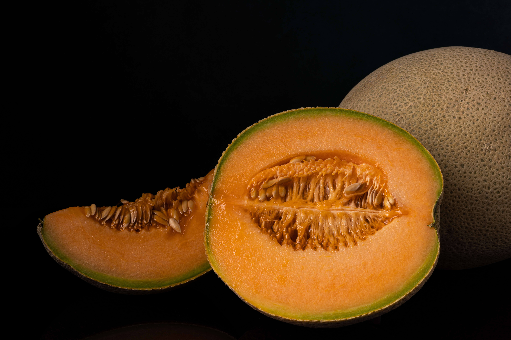

Cantaloupe

Cantaloupe is a juicy and flavorful fruit that offers a wide range of essential nutrients. It is packed with vitamin C, which boosts the immune system, promotes collagen production, and protects cells from damage. The fruit is also rich in beta-carotene, a precursor to vitamin A, which supports vision health, immune function, and healthy skin. Cantaloupe is a good source of potassium, an important mineral that helps regulate blood pressure, maintain fluid balance, and support heart health. It contains dietary fiber, which aids in digestion, promotes satiety, and helps maintain stable blood sugar levels. Additionally, the high water content of cantaloupe contributes to optimal hydration. The fruit is abundant in antioxidants, such as lutein and zeaxanthin, which promote eye health and protect against oxidative stress. Cantaloupe also provides B vitamins, including thiamine (B1) and niacin (B3), which are involved in energy production, nerve function, and maintaining healthy skin. Incorporating cantaloupe into your diet offers a delicious and refreshing way to boost your nutrient intake. Enjoy it as a standalone snack, add it to fruit salads, or blend it into smoothies. Its vibrant flavor and nutrient profile make it a valuable addition to a balanced and nutritious diet.